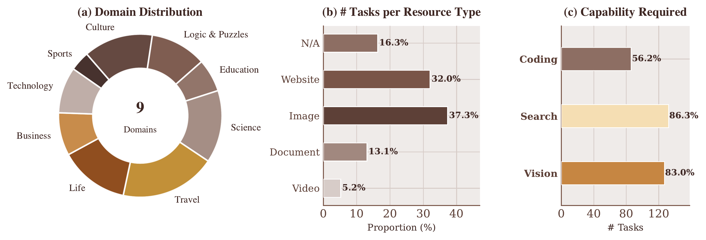
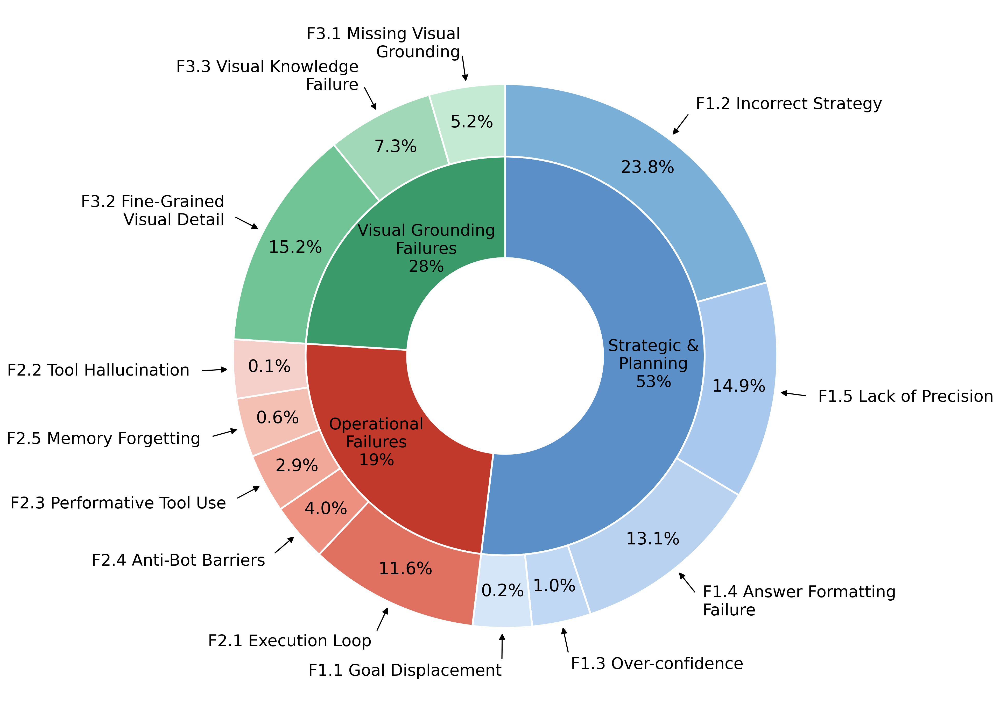

April 7, 2026
CocoaBench v1.0
By The CocoaBench Team
We are releasing CocoaBench v1.0, a benchmark for evaluating unified digital agents on complex, long-horizon tasks that require flexible composition of vision, search, and coding. Our paper is available here.

What is CocoaBench?
CocoaBench consists of 153 human-authored tasks spanning 9 domains — Business, Culture, Education, Life, Logic & Puzzles, Science, Sports, Technology, and Travel. Each task is defined minimally: a natural language instruction and an automatic evaluation function over the agent's final output. No fixed runtime, tool ecosystem, or interaction mode is assumed, making the benchmark compatible with any agent infrastructure.
Unlike benchmarks that test a single capability in isolation, CocoaBench is compositional by design — 98% of tasks require agents to combine multiple capabilities within a single run. For instance, an agent might need to visually inspect a webpage, search for supplementary information online, and write code to synthesize the results into a structured answer. Evaluation is fully automatic: every task ships with a verifiable evaluation script, so correctness does not rely on LLM judges or human review.

Key results
We evaluated representative existing agent systems as well as a range of model backbones under our shared Cocoa-Agent scaffold. The best-performing system — Codex and OpenClaw with GPT-5.4 as backbone — achieves only 45.1% success rate, underscoring substantial room for improvement.
Existing Agents
Cocoa-Agent
Figure 3. Overall performance on CocoaBench for representative existing agent systems (top) and model backbones under the shared Cocoa-Agent scaffold (bottom).
Error analysis across 712 failure trajectories reveals three recurring failure modes:
- Strategic & Planning (53%) — agents devise incorrect strategies or lose track of task requirements over long horizons.
- Visual Grounding (28%) — agents misread fine-grained visual details, misidentify content rendered in canvas or SVG elements, or lack the world knowledge to interpret what they perceive.
- Operational Failures (19%) — agents enter infinite loops, fail to recover from tool errors, or hallucinate tool outputs.

Notably, stronger models allocate a higher share of actions to code execution, suggesting that programmatic processing is a key strategy for the structured reasoning and output formatting CocoaBench tasks demand.
Cocoa-Agent
Alongside the benchmark, we release Cocoa-Agent, a lightweight shared scaffold built on top of AIO Sandbox — an all-in-one Docker runtime that integrates browser, shell, and file system in a single container. Cocoa-Agent adopts a ReAct-based loop with both DOM-level and screenshot-based GUI control, terminal execution, file manipulation, and sandboxed code execution. Its modular design enables controlled backbone comparisons and reproducible parallel evaluation.
What's next
CocoaBench is a living benchmark. We plan to expand the task set, add new domains, and keep evaluation resources stable over time. We welcome the community to run their agents on CocoaBench and contribute new tasks — see the contribution guide for details.
Join the discussion on our Discord.